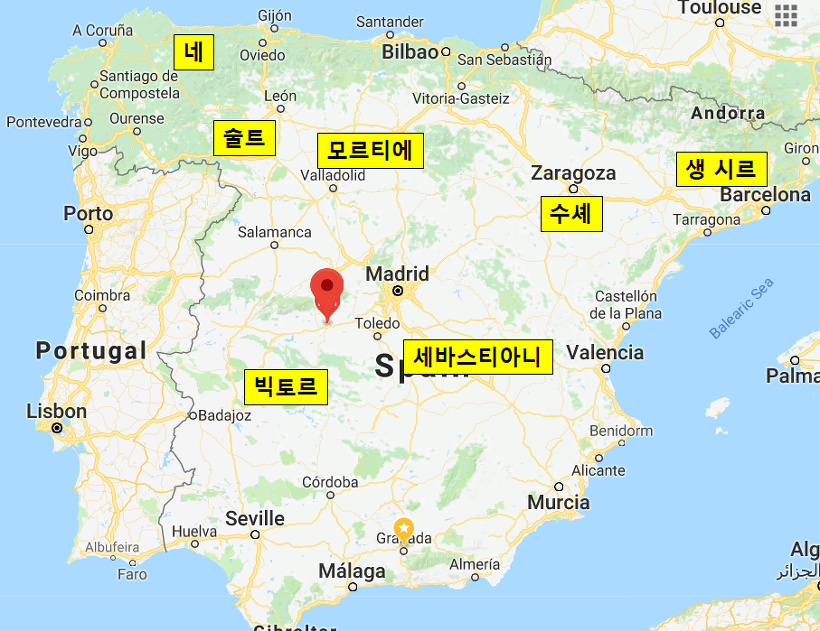
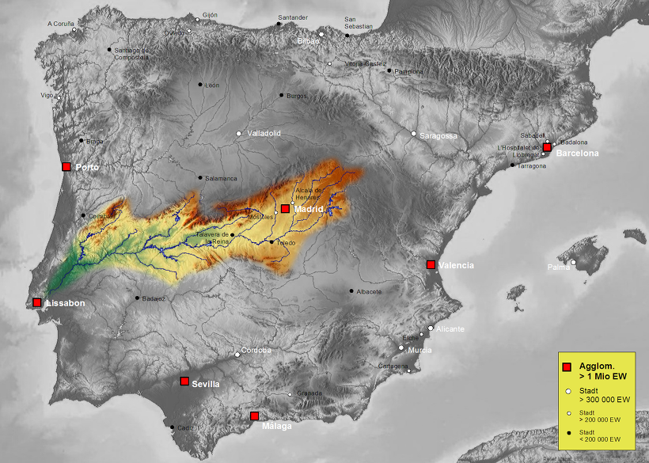
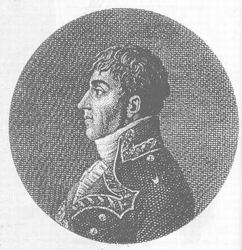
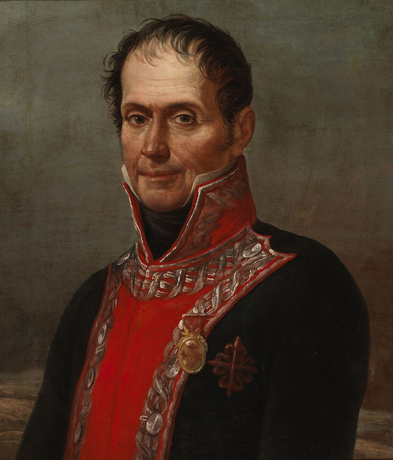

계곡의 연합군 - 탈라베라(Talavera) 전투 (1편)
게시: 2018-02-25T14:06:29+09:00
1809년 5월 16일 폰트 다 미사헬라(Ponte da Mizarela)에서 술트의 프랑스군을 놓친 웰슬리의 영국군은 크게 실망하지 않았습니다. 그들의 1차 목표인 포르투갈 탈환을 성공적으로 완수한 셈이었으니까요. 그러나 이는 일시적인 성공일 뿐이었습니다. 스페인-포르투갈 접경 지역 곳곳에는 빅토르와 세바스티아니 등이 이끄는 프랑스 군단들이 호시탐탐 포르투갈을 위협하고 있었으니, 이들을 격파하기 전에는 포르투갈이 안전하다고 할 수는 없었습니다. 그리고, 웰슬리는 정말 이들을 목표로 진격을 시작했습니다.
웰슬리의 영국군은 고작 2만명 수준이었습니다. 영국군에게는 이 정도면 굉장히 큰 규모의 야전군이었지만 스페인 내에서는 그리 인상적인 병력이 아니었습니다. 당시 스페인을 점거 중이던 프랑스군은 최소 7개 군단이었고 10만이 넘었으니까요. 그런 스페인으로 뛰어들어가는 것은 혹시 불꽃을 향해 날아드는 불나방 같은 짓이 아니었을까요 ?
웰슬리도 나름 정보와 생각이 있었습니다. 당시 스페인 내 프랑스군의 상태는 웰슬리의 진격에 대해 그다지 방비가 되어 있지 않았습니다. 생 시르(St. Cyr)의 제7 군단은 이베리아 반도 동쪽의 카탈루냐 지방에 있었고, 수셰(Suchet)의 제3 군단은 그 바로 옆 아라곤에 주둔하고 있었습니다. 모르티에(Mortier)의 제5 군단도 마드리드 북쪽 바야돌리드(Valladolid)에 주둔하고 있었고, 네(Ney)의 제6 군단은 이베리아 반도 북서쪽 갈리시아(Galicia)의 반란을 진압하고 있었습니다. 세바스티아니(Sebastiani)의 제4 군단은 마드리드 남동쪽에 위치해 있었고, 술트의 제2 군단은 웰슬리의 영국군에 의해 포르투갈에서 거지꼴로 막 쫓겨난 뒤 재정비를 하고 있었지요. 그리고 빅토르의 제1 군단은 포르투갈 접경 지역의 구아디아나(Guadiana)에 주둔하고 있었습니다.

(1809년 5월말, 스페인 내 프랑스 7개 군단의 위치입니다. 전년도에 있었던 바일렌에서의 뒤퐁의 대패 덕분에, 아직 스페인 남부 안달루시아에는 프랑스군이 발을 못 붙이고 있었고, 안달루시아의 주도인 세비야가 스페인 저항군의 거점 역할을 하고 있었습니다. 지도 속의 붉은색 지점 표시 부분이 바로 탈라베라입니다. )
웰링턴에게 주어진 공격 루트는 크게 2가지였습니다. 도우루(Douro) 강을 따라 술트를 추격하여 마무리짓는 것과, 훨씬 남쪽인 타호(Tajo, 포르투갈어로는 테주 Tejo, 영어로는 타거스 Tagus) 강을 따라 빅토르를 격파하는 것이었습니다. 왜 다 강을 따라 가냐고요 ? 스페인에 비해 작고 약한 포르투갈이 독립국으로 유지될 수 있었던 이유 중 하나는 스페인-포르투갈 국경지대의 지형이 무척 험하여 교통이 불편하다는 것이었습니다. 전통적으로 포르투갈에서 스페인으로 갈 수 있는 전통적인 교통로는 저 두 강을 따라 형성된 계곡들이었습니다. 특히 리스본부터 타호 강가를 따라 가면 탈라베라(Talavera)와 톨레도(Toledo)를 거쳐 마드리드 인근의 아랑후에스(Aranjuez)까지 갈 수 있었습니다.

(타호 강과 그 주변 강역도입니다. )
어떻게 생각하면 대포를 모두 잃은데다 만신창이가 되었고, 또 바로 발 뒤꿈치까지 따라잡은 술트의 뒤를 계속 추격하는 것이 상식적이었습니다. 그러나 웰슬리는 과감히 방향을 선회하여, 저 남쪽의 타호 강을 따라 진격하여 빅토르를 격파하기로 합니다. 여기에는 2가지 이유가 있었습니다.
첫째, 아무래도 2만 정도의 병력만으로 스페인 내부로 진격하는 것은 무척 버거운 일이었는데, 스페인 쿠에스타(Cuesta) 장군이 협동 작전을 요청해온 것입니다. 쿠에스타에게는 약 3만의 병력이 있었으니 영국군에게 이 제안은 무척이나 솔깃한 것이었습니다.
둘째, 상황을 보니 만약 빅토르만 성공적으로 격파한다면, 마드리드까지 일사천리로 진격할 수 있었습니다. 잘 하면 분산된 프랑스군의 의표를 찔러 마드리드를 기습 점령할 수도 있었습니다. 그렇게 점령한 뒤 과연 마드리드를 지켜낼 수 있느냐는 또 다른 문제였지만, 그래도 그런 승리는 큰 상징성이 있었습니다. 특히 웰슬리는 출세욕이 무척 강한 사람이었습니다. 그는 그다지 영광스럽지 못한 아일랜드 모닝턴(Earl of Mornington) 백작의 3남에 불과했으므로 철저한 장자 상속권을 따르는 영국 귀족 사회의 전통에 따라 그는 백작도 자작도 아무 것도 아니었습니다. 한번도 자신을 아일랜드인이라고 생각하지 않았던 그의 개인적 목표는 잉글랜드 내의 어느 근사한 영지에 대해 작위를 받는 것이었습니다.
그렇게 웰슬리는 야심찬 행군을 시작했으나, 군사작전이라는 것이 항상 그렇듯이 작전이 생각했던 것대로 돌아가지는 않았습니다. 일단 빅토르의 군단이 후퇴를 시작했습니다. 이는 웰슬리 때문이 아니었습니다. 현지 조달에 의존하는 프랑스군 특성상, 빅토르가 주둔하고 있던 에스트레마두라(Estremadura) 지방의 구아디나아에서는 식량이 바닥났던 것입니다. 쿠에스타의 스페인군도 견제할 겸 식량도 구할 겸, 빅토르의 제1 군단은 마드리드 쪽에 좀더 가까운 탈라베라(Talvera)로 이동했습니다.
여전히 상황은 영국-스페인 연합군에게 절대적으로 유리했습니다. 빅토르의 제1 군단은 1만9천 정도에 불과한 것에 비해, 연합군은 영국군 2만에 스페인군 3만이라는 병력을 동원할 수 있었습니다. 정보력에서도 영국-스페인 연합군은 압도적인 우위를 가지고 있었습니다. 스페인 민간 게릴라들이 주요 도로와 시골 지역을 완전히 장악하고 있었기 때문에, 프랑스군은 군단 간에 전통문을 주고 받는 것도 쉽지 않았고 소규모 정찰대를 운영하는 것은 엄두를 내지 못하고 있었습니다. 덕분에 빅토르를 비롯한 프랑스군은 영국군의 스페인 진입을 7월 9일까지도 까맣게 모르고 있었습니다.

(당시 68세이던 쿠에스타 장군에 대해 겁장이라고 비난하는 사람은 아무도 없었습니다. 그러나 그의 돈키호테 같은 아집과 오만, 그리고 외국인 혐오증은 매력적인 연합군 파트너가 되기에는 어울리지 않는 자질이었습니다.)
하지만 여기서 엉뚱한 오해가 영국-스페인 연합군의 발목을 잡습니다. 스페인 남부 안달루시아의 주도인 세비야(Sevilla) 지방 정부격인 훈타(Junta)에서 영국군을 좀더 적극적으로 끌어들이고자 웰슬리를 스페인군 전체의 통합 사령관으로 추대하자는 움직임이 시작된 것입니다. 정작 웰슬리 본인은 오직 잉글랜드 작위에만 관심이 있었던지라, 무능하고 믿을 수 없는 스페인군의 총사령관직 따위에는 관심이 없었습니다. 그러나 쿠에스타는 이야기가 달랐습니다. 원래 영국과 스페인은 바로 얼마 전까지만 해도 적대국 관계였습니다. 그리고 그보다 훨씬 더 오래전부터, 스페인 무적함대와 영국 해적왕 드레이크 이야기에서 짐작하시듯 아메리카 대륙과 네덜란드 등지에서 불구대천의 원수로 죽어라 싸우던 사이로서, 그 민족 감정은 꽤 뿌리가 깊은 것이었습니다. 아무리 더 큰 적 나폴레옹에 맞서기 위해 연합을 맺은 관계라고 해도, 오만하고 재수없는 영국 장군이 스페인군에게 지휘관 노릇을 하며 이래라저래라 명령질을 하는 모습은 스페인 장군들로서는 참기 어려운 것이었습니다. 웰슬리에게 합동 작전을 펼치자고 먼저 손을 내밀었던 쿠에스타가 웰슬리에게 갑자기 퉁명스럽게 대하며 이런저런 꼬투리를 잡기 시작한 것은 이때부터였습니다. 덕분에 웰슬리와 쿠에스타 사이에 구체적 합동 작전 계획에 대한 합의가 이루어지지 않았습니다.
일을 망친 것은 쿠에스타의 질시 때문만은 아니었습니다. 언제나 그렇지만 항상 산더미같은 염장 쇠고기와 럼주를 끼고 다녀야 했던 영국군의 특성 때문에 영국군의 진격은 너무 느렸습니다. 6월 8일 포르투갈 내 타호 강 계곡 지역인 아브란치스(Abrantes)에 도착한 영국군은 거의 3주간 그 지역에서 허송세월했는데, 이는 쿠에스타의 딴지 때문만은 아니었고 영국군을 위한 염장 쇠고기와 럼주 등 군량 창고를 짓고 물자를 집적하기 위해 시간이 필요했기 때문이었습니다. 웰슬리는 6월 28일에야 아브란치스를 떠나 7월 3일에야 스페인으로 진입했습니다.
이렇게 포르투 전투 이후 거의 2달이 지나서야 이렇게 스페인에 진입하기는 했지만, 여전히 빅토르는 영국군의 진입을 모른 채 쿠에스타와 대치하고 있었기 때문에, 웰슬리는 여전히 빅토르의 옆구리를 기습할 기회를 가지고 있었습니다. 하지만 여기서 전에는 없던 변수가 생겼습니다. 빅토르가 위치를 잡은 탈라베라는 전보다 훨씬 마드리드에 가까운 곳이었고, 더 나쁜 것은 세바스티아니의 프랑스군 제4 군단과도 더 가까와졌다는 것입니다. 웰슬리가 꿈꿨던 것은 쿠에스타와 빅토르가 서로의 멱살을 쥐고 뒹구는 사이에 살짝 다가가 빅토르의 옆구리에 연장질을 하는 것이었습니다. 그런데 그때 세바스티아니가 바로 옆에 서있다면 현장 분위기가 그다지 친영국적이지 않을 수 있다는 생각이 들었습니다.

(스페인 귀족들로 구성된 스페인군 수뇌부의 모든 문제점을 적나라하게 보여주는 대표적인 인물이 바로 베네가스 장군입니다.)
이 문제에 대한 해법은 스페인군이 제시했습니다. 세바스티아니와 대치 중이던 베네가스(Francisco Javier Venegas) 장군의 라 만차 군(Ejército de La Mancha)이 세바스티아니를 적절히 견제하여 서쪽의 빅토르를 지원할 수 없도록 하겠다는 것이었습니다. 그러나 세상에서 가장 쉬운 군사 작전이 서면 상의 작전이었습니다. 베네가스는 스페인 귀족다운 풍모와 위엄을 갖추고는 있었으나 귀족이 갖춘 것 그것 뿐이었습니다. 군사적 재능이라고는 1도 없었던 그는 이미 그 해 1월에 벌어진 우클레스(Uclés) 전투에서 고작 1만 조금 넘는 병력을 가지고 아무 상황 판단을 못 한 채 1만5천의 우세한 병력을 가진 빅토르에게 달려들었다가 1천의 사상자와 6천의 포로를 내는 참패를 겪은 바 있었습니다. 만약 스페인이 제대로 돌아가는 나라였다면, 국가가 풍전등화의 위기에 놓인 상황에서 그저 귀족의 체면을 위해 돌격했다가 1만군을 통째로 전멸시킨 베네가스는 군법회의에 회부되어야 했을 것입니다. 그러나 스페인은 철저한 귀족 중심 사회였고, 제대로 돌아가는 나라가 아니었습니다. 베네가스가 받은 것은 군법회의 출두명령서 대신 2만3천의 병력을 갖춘 라 만차 군 사령관 임명장이었습니다.
베네가스에게 주어진 명령은 2만 병력의 프랑스 제4 군단을 공격하여 분쇄하라는 것이 아니었습니다. 그저 섣부른 전투를 피하되 세바스티아니가 서쪽으로 이동하여 빅토르를 지원하지 못하도록 잘 대치하고 있으라는 간단한 명령이었지요. 그러나 베네가스는 그 간단한 명령조차 완수하지 못하는 신박함을 보여주었습니다. 7월 초, 마침내 웰슬리의 영국군이 탈라베라로 접근하고 있다는 사실을 파악한 프랑스군이 조제프 왕과 마드리드 수비대까지 다 이끌고 탈라베라로 달려갈 때, 베네가스 앞에 있던 세바스티아니도 서둘러 탈라베라로 이동했습니다. 그러나 베네가스는 그 뒷 모습을 멀뚱멀뚱 쳐다만 볼 뿐, 아무 역할을 하지 못했습니다.
하지만 이는 베네가스에게 완전히 또다른 기회를 주었습니다. 마드리드가 바로 코 앞인데, 그의 앞을 가로 막을 인근의 프랑스군이 모조리 탈라베라로 가버린 것입니다. 베네가스는 이때 2가지 꽃놀이 패를 쥐고 있었습니다. 세바스티아니의 뒤를 쫓아 탈라베라로 이동한 뒤 쿠에스타 및 웰슬리와 연합하여 건곤일척의 승부를 벌이는데 일조할 수도 있었고, 또는 아예 텅 빈 마드리드로 진격하여 수도를 탈환할 수도 있었습니다. 그런데 베네가스는 그냥 가만히 있었습니다. 대체 이해가 안 가는 행동이었습니다. 더 이해할 수 없는 일은 약 1달 뒤 상황이 완전히 바뀌어 다른 부대들과 합동 작전을 펼칠 수도 없는 상황에서, 베네가스는 후퇴하라는 쿠에스타의 명령을 거부하고 굳이 세바스티아니와 전투를 벌였다는 점입니다. 그 결과는 다음 기회에 보도록 하시고 일단은 탈라베라 전투에 집중하겠습니다.
이렇게 베네가스가 삽질을 해주는 덕분에 프랑스군은 빅토르와 세바스티아니 뿐만 아니라 조제프 보나파르트와 그의 보좌관 주르당(Jourdan) 원수가 이끄는 마드리드 수비대 및 2개 용기병 사단 총 1만1천까지 합류할 수 있었습니다. 탈라베라에서의 힘의 균형은 영국-스페인 연합군 5만5천에 프랑스군 4만6천으로, 어느 정도 균형을 이루게 된 셈이었으나 여전히 영국-스페인 연합군이 분명한 수적 우위를 차지하고 있었지요. 하지만 영국-스페인은 불신과 반목으로 얼룩진 어설픈 연합군이었습니다. 스페인 국왕 조제프가 직접 지휘하는 프랑스 단일 정예군과의 대결에서는 불리할 것이 뻔했습니다. 그러나 그게 또 꼭 그렇지만도 않았습니다.
Source : https://en.wikipedia.org/wiki/Tagus
http://www.historyofwar.org/articles/battles_talavera.html
http://www.historyofwar.org/articles/campaign_talavera.html
https://en.wikipedia.org/wiki/Battle_of_Talavera
https://en.wikipedia.org/wiki/Francisco_Javier_Venegas
https://en.wikipedia.org/wiki/Battle_of_Almonacid